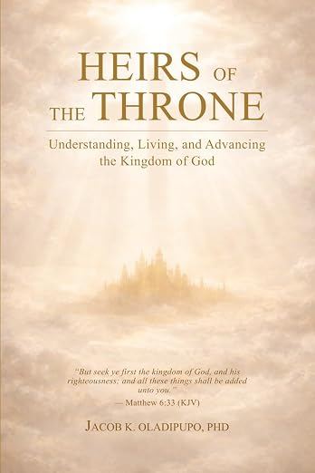
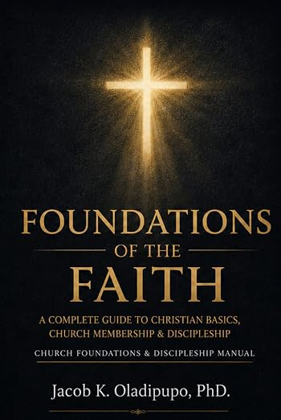

Great Commission
Christian Church
Christian Church
Author • Pastor • Biblical Scholar Equipping believers through biblical teaching, discipleship, leadership development and Christ-centered literature. Discover books designed to deepen your walk with God, strengthen your leadership, and inspire faithful Christian living.

Every book in the Jacob K. Oladipupo Library was written with one conviction: that the Word of God, carefully opened and faithfully applied, has the power to transform every dimension of a person's life. These books are written to build disciples, strengthen leaders, equip pastors, and help believers live out the Gospel with biblical wisdom and spiritual maturity. If you are serious about knowing God more deeply, leading more faithfully, and living the life Christ intended, you are in the right place.
Senior Pastor of Great Commission Christian Church, San Antonio, Texas. Dr. Oladipupo holds doctoral degrees in Missions & Evangelism and Biblical Hermeneutics. His ministry combines sound biblical scholarship with practical pastoral leadership to equip believers worldwide. His passion is simple: To raise disciples who know God's Word, live God's truth, and carry the Gospel to the nations.
Read My Full StoryVerse-by-verse teaching that equips believers to understand and apply God's Word.
Training pastors, church leaders, and ministry workers for faithful service.
Publishing Christ-centered books that strengthen disciples around the world.
Taking the Gospel Light to All Nations through teaching, missions, and literature.
Discover inspiring books by Rev. Dr. Jacob Kehinde Oladipupo, available on Amazon.


Matthew 28:19
7111 Capella Circle
San Antonio, Texas 78252, USA
Phone: +1 (817) 655-5676
Email: kdipupo@yahoo.com
Contact Us